*6.4.ahist drinktime, percent fcolor(none) xlab(0(2)18) ///title("[6.4.a] Distribution of Number of Drinks Consumed in a Typical Sitting")
(bin=37, start=0, width=.48648649)
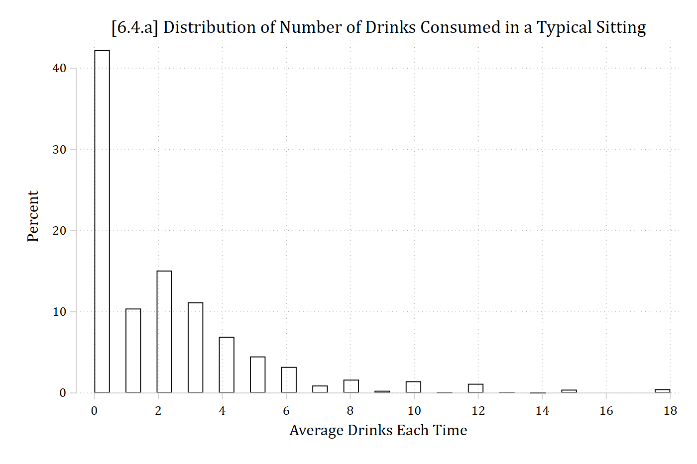
library(haven) # import Stata data and labelslibrary(dplyr) # data manipulationlibrary(ggplot2) # graphslibrary(modelsummary) # regression tableslibrary(marginaleffects) # predictions and marginal effectslibrary(cleanplots) # graph schemecleanplots_defaults()ah4 <-read_dta("https://tdmize.github.io/data/data/cda_ah4.dta")# 6.4.aggplot(ah4, aes(x = drinktime)) +geom_histogram(aes(y =after_stat(100* count /sum(count))), binwidth =1,fill =NA, color ="black") +scale_x_continuous(breaks =seq(0, 18, 2)) +labs(title ="[6.4.a] Distribution of Number of Drinks Consumed in a Typical Sitting",x ="Average Drinks Each Time", y ="Percent")
(Intercept) womanWoman age collegeCollege Degree
14.0395911 0.6089678 0.9506264 0.7766083
raceBlack raceNative American raceAsian income
0.6929874 1.3304467 0.8761973 1.0028888
spouseroleMarried parroleParent
0.8772996 0.7981304
Exponentiated coefficients are referred to as “incident rate ratios” in Poisson
Women’s rates of drinking are lower than men’s by a factor of about 0.61
Each additional year of age is associated with a 0.95 times decrease in the number of drinks consumed in a sitting
Black and Asian respondents drink fewer drinks in a sitting than do White respondents (eb = 0.69; eb = 0.88); in contrast, Native American respondents drink 1.33 times more drinks in a sitting than White respondents
An additional $1000 of income is associated with consuming 1.003 times more drinks in a sitting
Plots of the predicted rate
The predicted rate is the default quantity with margins in Stata and with plot_predictions in R
*6.4.equi margins, at(age=(24(1)33) woman=(0 1))marginsplot, recastci(rline) ciopts(lpat(dash) col(gs12)) ylab(0(1)4) ///ytitle("Number of Drinks") xtitle("Age in Years") ///title("[6.4.e] Predicted Number of Drinks in a Typical Sitting Based on Age", size(medium))
Variables that uniquely identify margins: age woman
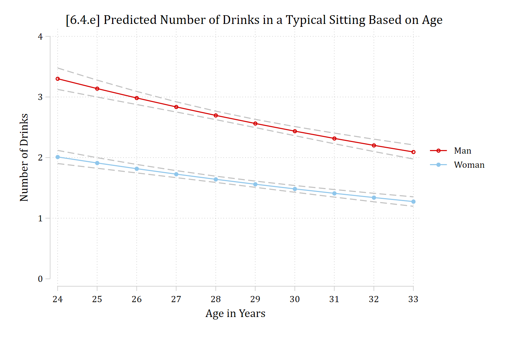
R’s plot_predictions default would hold controls at modal person. To get average predictions, need the newdata statement with a “counterfactual” grid_type.
# 6.4.eplot_predictions(pmod, by =c("age", "woman"),newdata =datagrid(age =24:33, woman = unique, grid_type ="counterfactual")) +scale_x_continuous(breaks =24:33) +scale_y_continuous(breaks =0:4, limits =c(0, 4)) +labs(title ="[6.4.e] Predicted Number of Drinks in a Typical Sitting Based on Age",x ="Age in Years", y ="Number of Drinks", color =NULL, fill =NULL)
*6.4.fqui margins, at(income=(0(5)150) woman=(0 1))marginsplot, recastci(rline) ciopts(lpat(dash) col(gs12)) ylab(0(1)4) xlab(0(25)150) /// plotopts(msym(i)) ///ytitle("Number of Drinks") xtitle("Personal Income in $1000s") ///title("[6.4.f] Predicted Number of Drinks in a Typical Sitting Based on Income", size(medium))
Variables that uniquely identify margins: income woman
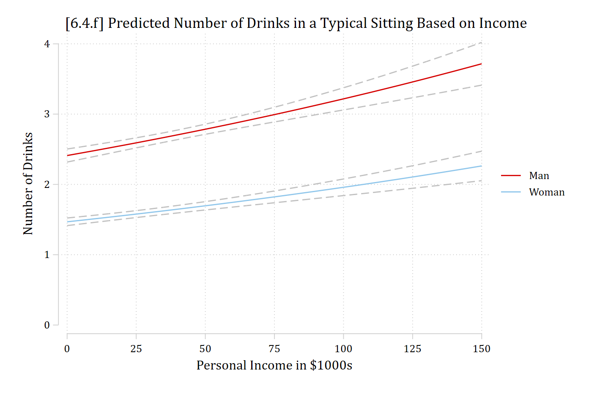
# 6.4.fplot_predictions(pmod, by =c("income", "woman"),newdata =datagrid(income =seq(0, 150, 5), woman = unique, grid_type ="counterfactual")) +scale_x_continuous(breaks =seq(0, 150, 25)) +scale_y_continuous(breaks =0:4) +coord_cartesian(ylim =c(0, 4)) +labs(title ="[6.4.f] Predicted Number of Drinks in a Typical Sitting Based on Income",x ="Personal Income in $1000s", y ="Number of Drinks", color =NULL, fill =NULL)
*Show nonlinearities (predictions across a broader range)*6.4.gqui margins, at(age=(0(2.5)100))marginsplot, noci xlab(0(20)100) ylab(0(2)10) plotopts(msym(i)) ///ytitle("Number of Drinks") xtitle("Age in Years") ///title("[6.4.g] Predicted Number of Drinks in a Typical Sitting Based on Age", size(medium))
Variables that uniquely identify margins: age
*6.4.hqui margins, at(income=(0(50)2000))marginsplot, noci ylab() xlab(0(250)2000) /// plotopts(msym(i)) ///ytitle("Number of Drinks") xtitle("Personal Income in $1000s") ///title("[6.4.h] Predicted Number of Drinks in a Typical Sitting Based on Income", size(medium))
Variables that uniquely identify margins: income
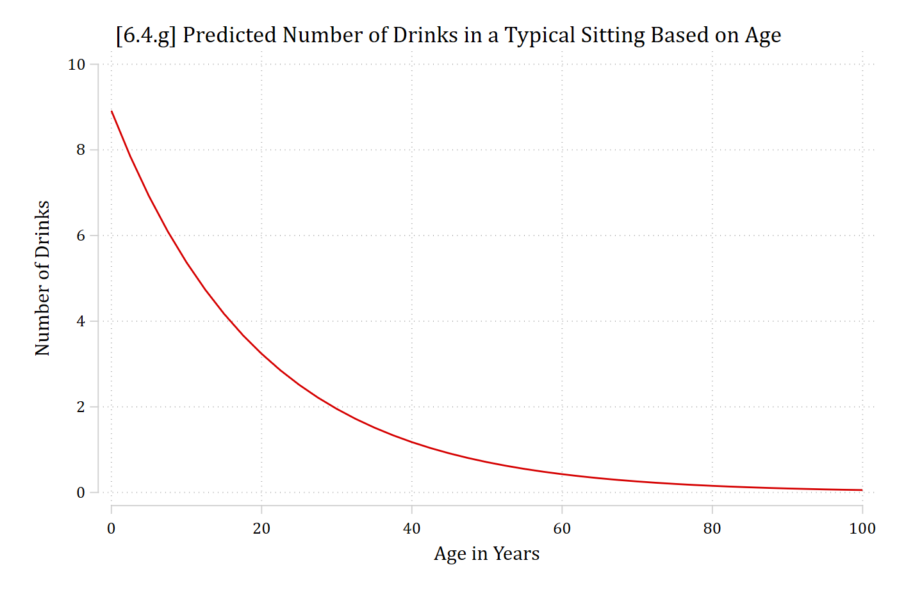
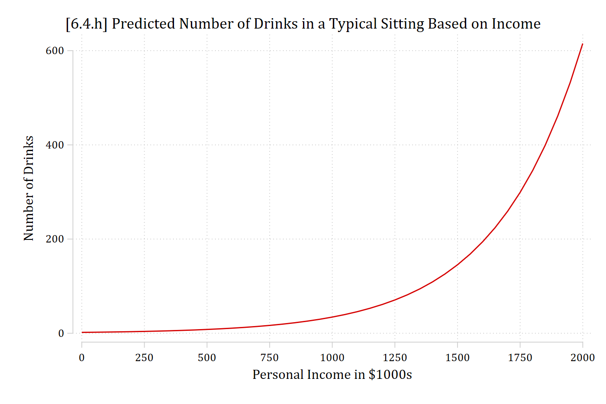
# Show nonlinearities (predictions across a broader range)# 6.4.gplot_predictions(pmod, by ="age",newdata =datagrid(age =seq(0, 100, 2.5), grid_type ="counterfactual"), vcov =FALSE) +scale_x_continuous(breaks =seq(0, 100, 20)) +scale_y_continuous(breaks =seq(0, 10, 2), limits =c(0, 10)) +labs(title ="[6.4.g] Predicted Number of Drinks in a Typical Sitting Based on Age",x ="Age in Years", y ="Number of Drinks")
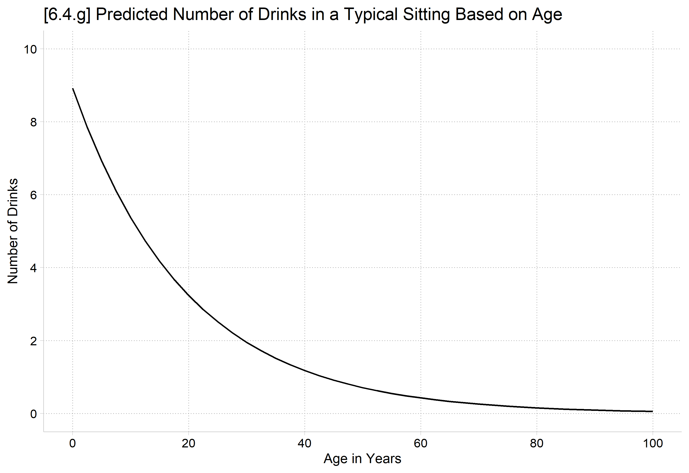
# 6.4.hplot_predictions(pmod, by ="income",newdata =datagrid(income =seq(0, 2000, 50), grid_type ="counterfactual"), vcov =FALSE) +scale_x_continuous(breaks =seq(0, 2000, 250)) +labs(title ="[6.4.h] Predicted Number of Drinks in a Typical Sitting Based on Income",x ="Personal Income in $1000s", y ="Number of Drinks")
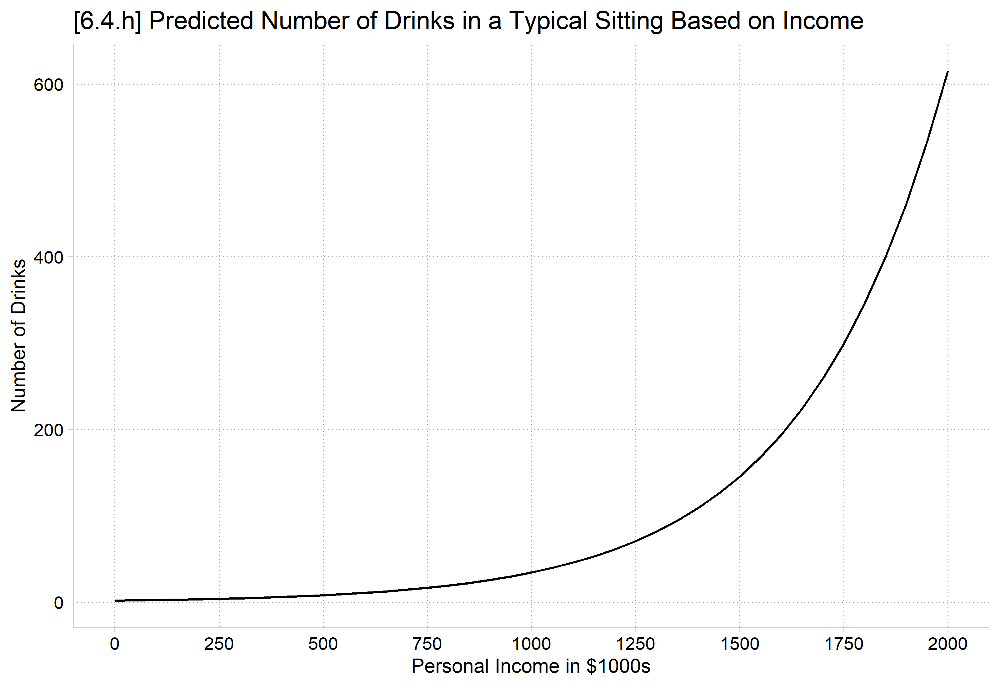
Marginal effect on the rate
The factor change (eb) is constant; it does not differ across values of the IVs
The marginal effect depends on the values of the IVs
Considerations about what starting and ending values to use; whether to hold control variables at the mean (MEM) or to average over observed values (AMEs) are identical in count models to other nonlinear models
Predicting: Predicted number of events
Marginal effects (N_pmod=4983)
| ME # Estimate SE P>|z|
---------------------------------+---------------------------------------
woman |
Woman - Man |
pmod | 1 -1.038 0.045 0.000
avg_comparisons(pmod, variables ="woman")
Estimate Std. Error z Pr(>|z|) S 2.5 % 97.5 %
-1.04 0.0447 -23.2 <0.001 393.8 -1.13 -0.95
Term: woman
Type: response
Comparison: Woman - Man
On average, women consume about one fewer drink in a typical sitting than do men (ME = -1.038; p < 0.001).
Interpretation tip: Count DVs tend to have a natural metric; using it in your interpretations instead of “rate” or “expected count” is recommended. Here, “number of drinks”.
In Stata, can request the probability of a specific count # on margins, with option predict(pr(#))
And a range with predict(pr(#,#))
*6.4.i - Pr(y=0)estrestore pmod
(results pmod are active now)
qui margins, at(age=(21(1)35) woman=(0 1)) predict(pr(0))marginsplot, recastci(rline) ciopts(lpat(dash) col(gs12)) ylab(0(.1).4) xlab(21(2)35) ///ytitle("Pr(Typically Consumes 0 Drinks)") xtitle("Age in Years") ///title("[6.4.i] Probability of Consuming Zero Drinks in a Typical Sitting",size(medium))
Variables that uniquely identify margins: age woman
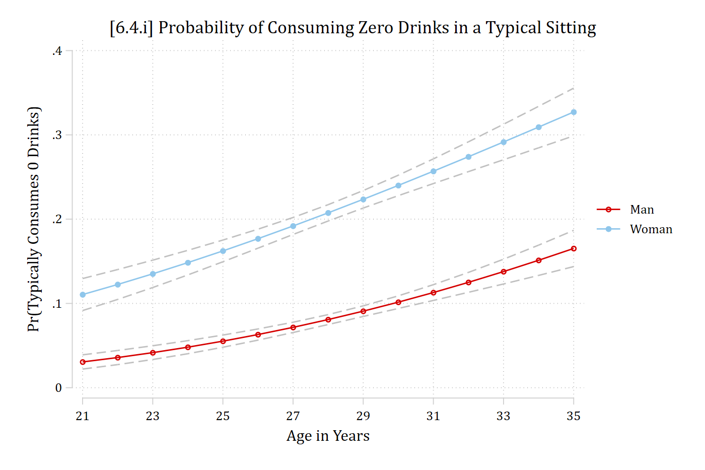
In R, plot_predictions only predicts the expected count
Instead, use predictions() first and convert each person’s predicted count to the probability of a specific count with dpois(#, x) inside the hypothesis option
Take the mean() to average within each age and gender combination
Use ggplot to make the graph using the stored predictions
# 6.4.i - Pr(y=0)pr0 <-predictions(pmod, type ="response",newdata =datagrid(age =21:35, woman = unique, grid_type ="counterfactual"),hypothesis =~I(mean(dpois(0, x))) | age + woman)ggplot(pr0, aes(age, estimate, ymin = conf.low, ymax = conf.high, color = woman, fill = woman)) +geom_ribbon(alpha = .2, color =NA) +geom_line() +scale_x_continuous(breaks =seq(21, 35, 2)) +scale_y_continuous(breaks =seq(0, .4, .1), limits =c(0, .4)) +labs(title ="[6.4.i] Probability of Consuming Zero Drinks in a Typical Sitting",x ="Age in Years", y ="Pr(Typically Consumes 0 Drinks)", color =NULL, fill =NULL)
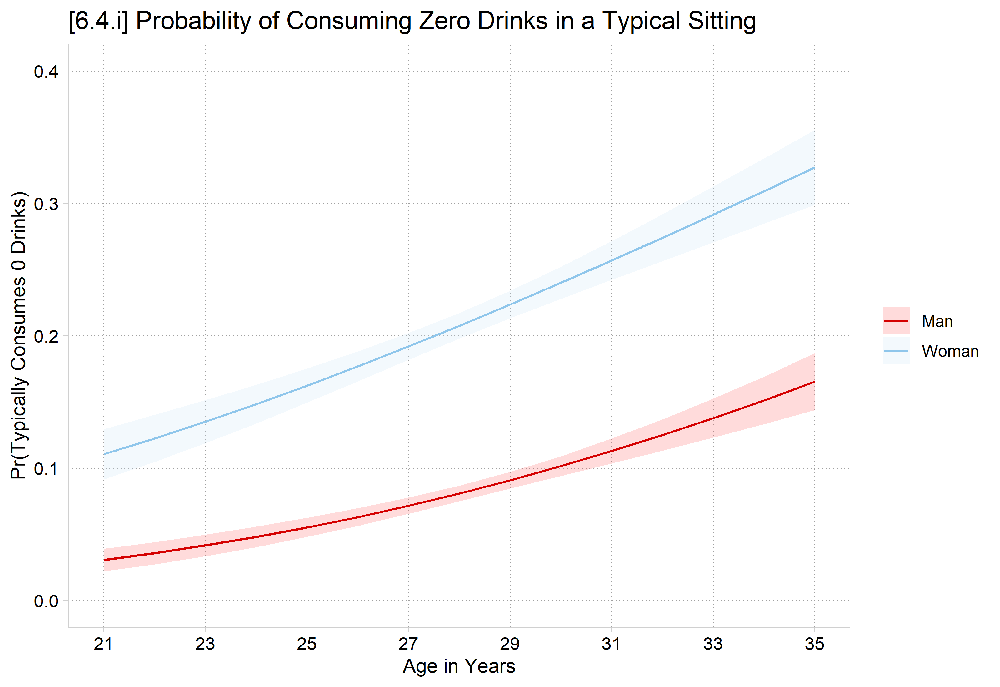
Marginal effects on probabilities of specific counts
Define \(\eta\) as the probability of a specific count # (or range)
Estimate Std. Error z Pr(>|z|) S 2.5 % 97.5 %
0.0654 0.00712 9.18 <0.001 64.4 0.0514 0.0793
Term: age
Type: response
Comparison: custom
Aging from the 5th to 95th percentile in the data (26 to 31), predicts a 6.5 percentage point increase in the probability of not drinking any alcoholic drinks.
Interpretation tip: As with a +SD effect, the first time you report a (trimmed) range ME, useful to remind readers what those values are in your data.
qui margins, at(age=(21(1)35) woman=(0 1)) predict(pr(3))marginsplot, recastci(rline) ciopts(lpat(dash) col(gs12)) ylab(0(.1).4) xlab(21(2)35) ///ytitle("Pr(Typically Consumes 3 Drinks)") xtitle("Age in Years") ///title("[6.4.j] Probability of Consuming Three Drinks in a Typical Sitting", size(medium))
Variables that uniquely identify margins: age woman
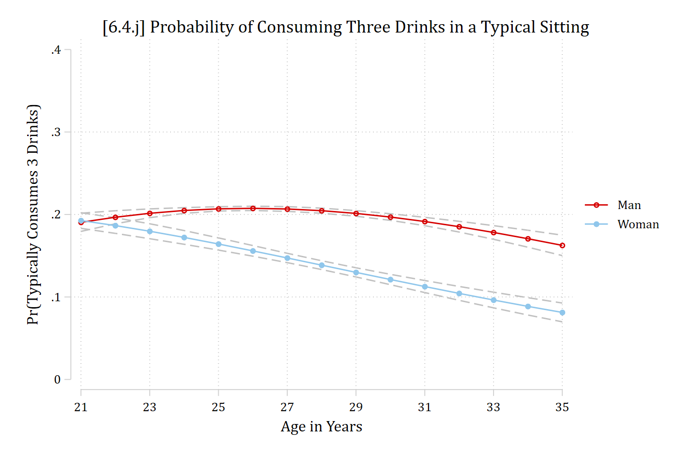
# 6.4.j - Pr(y=3)pr3 <-predictions(pmod, type ="response",newdata =datagrid(age =21:35, woman = unique, grid_type ="counterfactual"),hypothesis =~I(mean(dpois(3, x))) | age + woman)ggplot(pr3, aes(age, estimate, ymin = conf.low, ymax = conf.high, color = woman, fill = woman)) +geom_ribbon(alpha = .2, color =NA) +geom_line() +scale_x_continuous(breaks =seq(21, 35, 2)) +scale_y_continuous(breaks =seq(0, .4, .1), limits =c(0, .4)) +labs(title ="[6.4.j] Probability of Consuming Three Drinks in a Typical Sitting",x ="Age in Years", y ="Pr(Typically Consumes 3 Drinks)", color =NULL, fill =NULL)
*6.4.k - Pr(y >= 4)qui margins, at(age=(21(1)35) woman=(0 1)) predict(pr(4,18))marginsplot, recastci(rline) ciopts(lpat(dash) col(gs12)) ylab(0(.1).7) xlab(21(2)35) ///ytitle("Pr(Typically Consumes 4+ Drinks)") xtitle("Age in Years") ///title("[6.4.k] Probability of Consuming Four or More Drinks in a Typical Sitting", size(medium))
Variables that uniquely identify margins: age woman
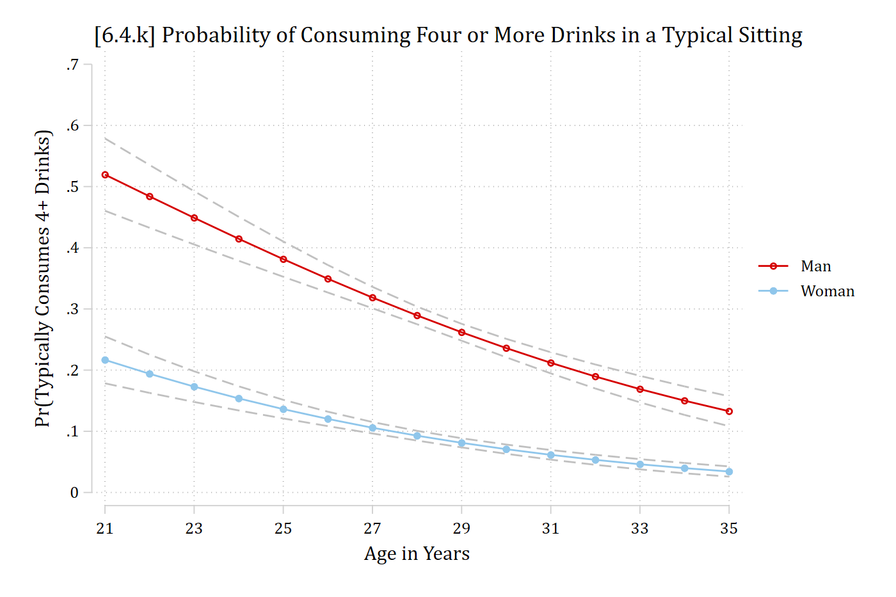
In R, for a range of counts, use ppois(#, x), which gives the probability of # or fewer. Specify amount between end # and start # – 1. E.g. For Pr(y = 4–18)
# 6.4.k - Pr(y >= 4)pr4_18 <-predictions(pmod, type ="response",newdata =datagrid(age =21:35, woman = unique, grid_type ="counterfactual"),hypothesis =~I(mean(ppois(18, x) -ppois(3, x))) | age + woman)ggplot(pr4_18, aes(age, estimate, ymin = conf.low, ymax = conf.high, color = woman, fill = woman)) +geom_ribbon(alpha = .2, color =NA) +geom_line() +scale_x_continuous(breaks =seq(21, 35, 2)) +scale_y_continuous(breaks =seq(0, .7, .1), limits =c(0, .7)) +labs(title ="[6.4.k] Probability of Consuming Four or More Drinks in a Typical Sitting",x ="Age in Years", y ="Pr(Typically Consumes 4+ Drinks)", color =NULL, fill =NULL)
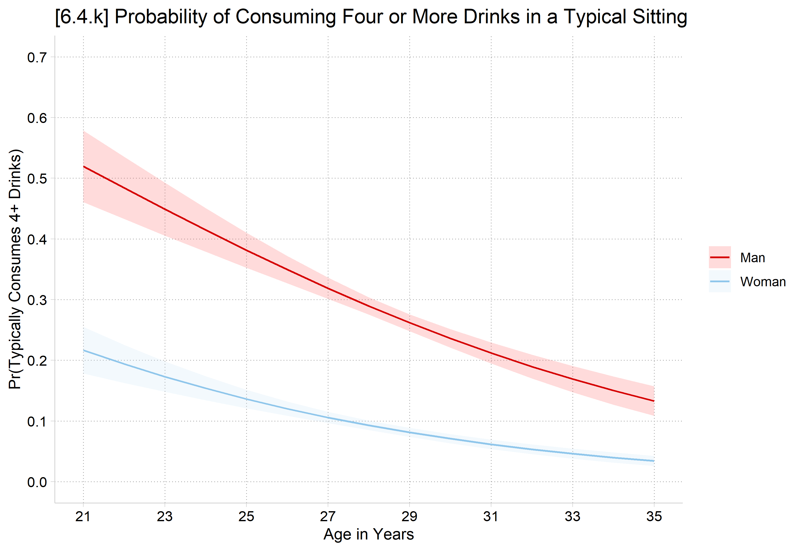
Marginal effects on probability of a range of counts
Predicting: Pr(4<=drinktime<=18)
Marginal effects (N_pmod=4983)
| ME # Estimate SE P>|z|
---------------------------------+---------------------------------------
age + SD (centered) |
pmod | 1 -0.035 0.004 0.000
# Center changes in continuous IVs on each observation's value (as mecompare does)options(marginaleffects_contrast_direction ="center")avg_comparisons(pmod, variables =list(age =sd(ah4$age)),comparison =function(hi, lo) (ppois(18, hi) -ppois(3, hi)) - (ppois(18, lo) -ppois(3, lo)))
Estimate Std. Error z Pr(>|z|) S 2.5 % 97.5 %
-0.035 0.00376 -9.3 <0.001 66.0 -0.0423 -0.0276
Term: age
Type: response
Comparison: +1.81236443621303
In this article, we define risk of alcohol misuse as reporting an average number of alcoholic drinks in a sitting as 4 or more. Using this definition, aging a standard deviation (about 2 years) predicts a 3.5 percentage point decrease in the probability of being at risk of alcohol misuse.